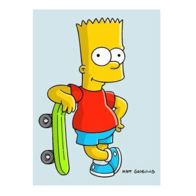

Bart
Bart on Simpsoneissa 10‑vuotias poika, joka tekee kepposia, ärsyttää opettajia ja joutuu jatkuvasti ongelmiin. Hän on perheen villikko ja tunnetaan huudahduksista kuten “Eat my shorts”.

Nancy Cartwright
Meemit



Bart on Simpsoneissa 10‑vuotias poika, joka tekee kepposia, ärsyttää opettajia ja joutuu jatkuvasti ongelmiin. Hän on perheen villikko ja tunnetaan huudahduksista kuten “Eat my shorts”.